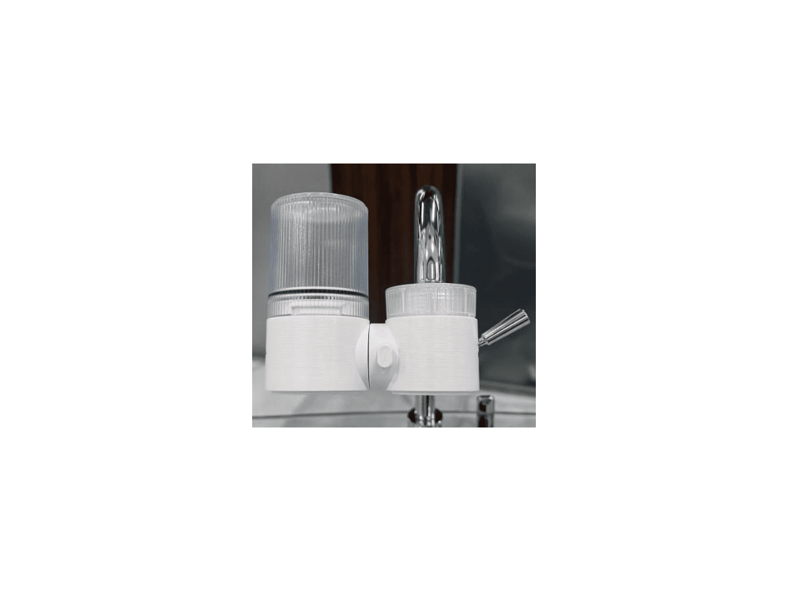

Под мойку
Под мойкуRP-U07
RO-очиститель под мойку 400–600 GPD
SKU: RP-U07
MOQ: уточняйте при запросе
Каждая модель ниже — подтверждённая модель каталога. Модели-кандидаты здесь не указаны.
46 моделей
По вашему запросу моделей не найдено. Попробуйте другой артикул или очистите фильтры.
Горячая/Холодная/Лёд — подборка существующих моделей. Доступные функции зависят от модели.
Под мойкуRO-очиститель под мойку 400–600 GPD
SKU: RP-U07
MOQ: уточняйте при запросе
 Под мойку
Под мойкуRO под мойку с накопительным нагревом
SKU: RP-U08
MOQ: уточняйте при запросе
 Под мойку
Под мойкуВысокопроизводительный RO-очиститель с фронтальным доступом
SKU: RP-U09
MOQ: уточняйте при запросе
 Под мойку
Под мойкуRO-очиститель с тремя картриджами
SKU: RP-U11
MOQ: уточняйте при запросе
 Под мойку
Под мойкуСистема RO с выдвижным картриджем без инструментов
SKU: RP-U01
MOQ: уточняйте при запросе
 Под мойку
Под мойкуСистема RO с двойным приводом и повышенной производительностью
SKU: RP-U06
MOQ: уточняйте при запросе
 Под мойку
Под мойкуКомпактный RO-очиститель с двумя картриджами
SKU: RP-U12
MOQ: уточняйте при запросе
 Под мойку
Под мойкуКомпактный RO-очиститель с двумя выходами
SKU: RP-U14
MOQ: уточняйте при запросе
 Под мойку
Под мойкуRO-очиститель водородной воды под мойку
SKU: RP-U04
MOQ: уточняйте при запросе
 Под мойку
Под мойкуRO с краном мгновенного нагрева и охлаждением
SKU: RP-U02
MOQ: уточняйте при запросе
 Под мойку
Под мойкуВысокопроизводительный бытовой RO-очиститель
SKU: RP-U03
MOQ: уточняйте при запросе
 Под мойку
Под мойкуКомпактная платформа RO с двумя картриджами
SKU: RP-U05
MOQ: уточняйте при запросе
 Под мойку
Под мойкуДополнительный блок охлаждения под мойку
SKU: RP-U15
MOQ: уточняйте при запросе
 Под мойку
Под мойкуКран мгновенного нагрева из нержавеющей стали
SKU: RP-U16
MOQ: уточняйте при запросе
 Под мойку
Под мойкуПредфильтр высокой производительности с двумя корпусами
SKU: RP-U17
MOQ: уточняйте при запросе
 Настольные
НастольныеRO-очиститель с нагревательным кувшином
SKU: RP-C07
MOQ: уточняйте при запросе
 Настольные
НастольныеНастольный очиститель «всё в одном» со сменным картриджем
SKU: RP-C08
MOQ: уточняйте при запросе
 Настольные
НастольныеRO-очиститель с льдом, горячей и холодной водой
SKU: RP-C09
MOQ: уточняйте при запросе
 Настольные
НастольныеНастольный RO с компрессорным охлаждением
SKU: RP-C10
MOQ: уточняйте при запросе
 Настольные
НастольныеRO-очиститель со свежемолотым кофе
SKU: RP-C11
MOQ: уточняйте при запросе
 Настольные
НастольныеНастольный очиститель воды
SKU: RP-C12
MOQ: уточняйте при запросе
 Настольные
НастольныеДиспенсер RO с мгновенным нагревом
SKU: RP-C13
MOQ: уточняйте при запросе
 Настольные
НастольныеОчиститель с мгновенным нагревом без установки
SKU: RP-C03
MOQ: уточняйте при запросе
 Настольные
НастольныеRO с мгновенным нагревом и съёмным кувшином
SKU: RP-C01
MOQ: уточняйте при запросе
 Настольные
НастольныеНастольный диспенсер RO водородной воды
SKU: RP-C04
MOQ: уточняйте при запросе
 Настольные
НастольныеСерия газированной воды — два варианта (RP-C14 / RP-C05)
SKU: RP-C14
MOQ: уточняйте при запросе
 Настольные
НастольныеНастольная серия газированной и водородной воды (P90 / P90-1)
SKU: RP-C15
MOQ: уточняйте при запросе
 Настольные
НастольныеНастольный очиститель воды health-pot
SKU: RP-C17
MOQ: уточняйте при запросе
 Настольные
НастольныеКомпактный настольный RO-очиститель со стеклянным кувшином
SKU: RP-C19
MOQ: уточняйте при запросе
 Настольные
НастольныеНастольный RO с компрессорным охлаждением и баком горячей воды
SKU: RP-C21
MOQ: уточняйте при запросе
 Настольные
НастольныеВстраиваемый диспенсер холодной и горячей воды с опцией приготовления льда
SKU: RP-C24
MOQ: уточняйте при запросе
 Коммерческие
КоммерческиеНапольный коммерческий диспенсер воды (A1) — RO 100G · 50–100 человек · горячая / холодная / лёд
SKU: RP-C23
MOQ: уточняйте при запросе
 Умягчение
УмягчениеКомпактный умягчитель воды под мойку
SKU: RP-U18
MOQ: уточняйте при запросе
 Умягчение
УмягчениеСерия умягчителей воды с раздельным баком — 32,000 / 48,000 / 64,000 grain
SKU: RP-W01
MOQ: уточняйте при запросе
 Для душа
Для душаРучной фильтр для душа
SKU: RP-S01
MOQ: уточняйте при запросе
 Для душа
Для душаПрямоугольный фильтр для душа
SKU: RP-S03
MOQ: уточняйте при запросе
 Для душа
Для душаМногорежимный фильтр для душа — четыре модели
SKU: RP-S07
MOQ: уточняйте при запросе
 Для душа
Для душаПортативный фильтр для душа
SKU: RP-S10
MOQ: уточняйте при запросе
 Для душа
Для душаПроточный предфильтр для душа
SKU: RP-S11
MOQ: уточняйте при запросе
 Для душа
Для душаФильтр для душа с быстрым креплением
SKU: RP-S12
MOQ: уточняйте при запросе
 Для душа
Для душаСистема фильтрации для душа — один или несколько блоков
SKU: RP-S14
MOQ: уточняйте при запросе
 Для крана
Для кранаКлассический фильтр для крана
SKU: RP-F01
MOQ: уточняйте при запросе
 Для крана
Для кранаФильтр для крана с поворотом на 360°
SKU: RP-F02
MOQ: уточняйте при запросе

Для кранаФильтр для крана из углеродного волокна
SKU: RP-F06
MOQ: уточняйте при запросе
 Для крана
Для кранаФильтр для крана с индикатором ресурса фильтра
SKU: RP-F08
MOQ: уточняйте при запросе
 Для крана
Для кранаФильтр для крана — встроенный и раздельный
SKU: RP-F10
MOQ: уточняйте при запросе
Начните с предполагаемого использования, местного спроса, потребностей в установке и проверенных требований к модели. Этот каталог — не сертификация портативного продукта и не отчёт о размере рынка. Пригодность для проекта рынка портативных очистителей воды: подтверждается при заказе.